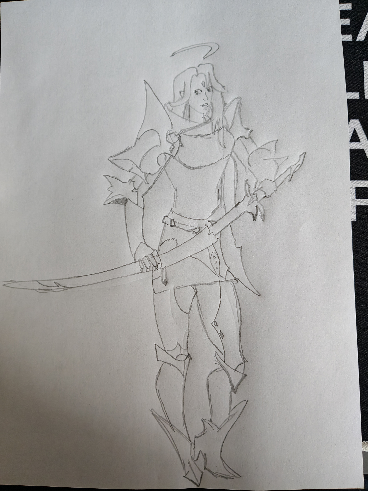

My Art Learning Journey - Day 1: Studying Knight Character Design
Enutie
Starting My Art Journey
As you probably know, I am following the Draw a Box course and they emphasize that you also draw for fun at the side, called The 50 rule. Today, I practiced by studying a beautiful character design by wu shenyou, a professional concept artist.
My Practice Attempt

This is my beginner attempt at studying the original artwork. I know I have a long way to go, but everyone starts somewhere!
Original Artwork Credit
This practice sketch is based on the “Moon Knight” artwork by wu shenyou, which you can find on ArtStation here.
What I Learned
I learned, that I know nothing, Jon Snow!
This was a very ambitious drawing, but then again, I need to challenge myself to grow. Proportions is very difficult I think, understanding how big things need to be. I think I need to study some basic anatomy or something like that to get it better.
I’m excited to keep learning and improving.